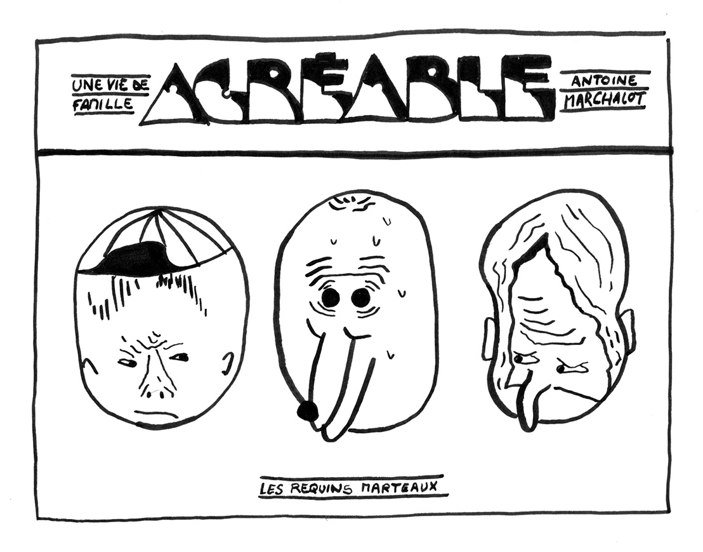
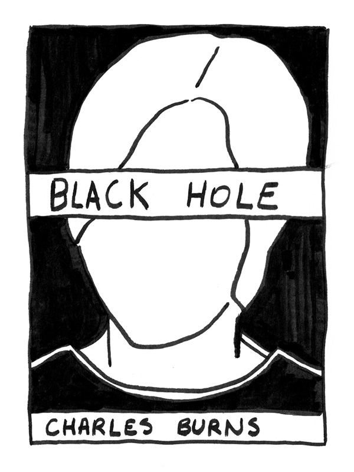
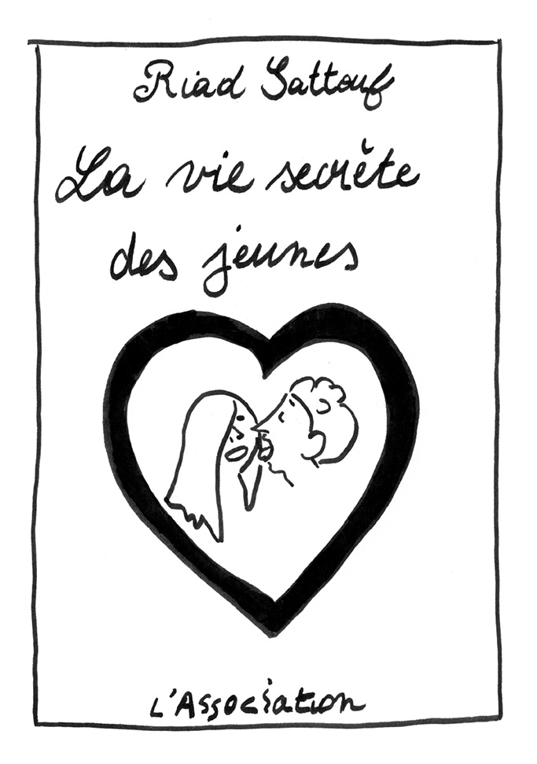

Léo Gillet – entretien et sélection
Bruxelles, Belgique
Étudiant master en sculpture et illustration à l’Erg
Expérimente les différentes formes que
peuvent prendre la BD par le biais de la peinture,
de l’installation et de la sculpture.
LBLT :On t’a demandé d’amener ton top 5 BD. Avant de nous le montrer pourrais-tu nous dire quelle est pour toi la bande-dessinée suprême ? Que lis-tu en ce moment, et en général ? Quels sont les publications et auteurs que tu affectionnes ? Et quels sont ceux que tu affectionnais particulièrement à tes débuts ?
LG :Comme je disais, je n’ai pas beaucoup de livres chez moi. J’en ai ramené un qui me touche particulièrement c’est Une vie de famille agréable d’Antoine Marchalot. C’est un auteur qui doit avoir 30 ans, il est assez jeune. Il a commencé à faire des revues avec des étudiants de son école en France, je ne sais plus exactement où il était. Après, il a commencé à sortir des BDs chez Requins Marteaux. C’est un mec que j’aime bien parce qu’il a un dessin qui n’est pas très conventionnel. On pourrait dire, a priori, que les personnages sont très mal dessinés mais comme il assume complètement son trait, et qu’il y va à fond, au final, on s’en fout que le personnage ait seulement un oeil ou une tête naïve. On s’en fout totalement parce qu’il axe tout sur la narration, sur le scénario complètement absurde et potache. Donc ça, c’est une BD que j’ai découvert en arrivant à l’Erg et c’est un truc qui m’a vachement enrichi pour mes travaux. C’est une BD que j’ai toujours avec moi. C’est rempli de blagues trop marrantes, de références, de petites références par rapport à des artistes, des grands dessinateurs de BDs. Graphiquement, il teste plein de trucs. Il se donne aucune limite dans la BD. J’aurai pu ramener d’autres bouquins de lui. Il cherche à faire de nouvelles mises en pages, de nouvelles compositions, de nouvelles couleurs, de nouvelles façon de travailler l’espace. Par exemple, il va faire un strip avec uniquement des objets abstraits. Aucun visage, aucune figuration et il va réussir à faire une blague avec des formes qui se rentrent dedans. Il est assez fort. Il questionne beaucoup les codes de la BD. C’est assez chouette. Cette BD-là, elle est peut-être un peu plus classique mais elle est trop bien. Il travaille à la main et sur Illustrator.
LBLT :Il travaille seulement dans l’éditorial ou son travail prend parfois une autre forme ?
LG :Il fait aussi de la peinture. Ses dessins se retrouvent sur des châssis au mur. En tout cas, la BD que je vous ai présentée est une des seules qu’il a publiée par une maison d’édition. Ou sinon il diffuse son travail dans des revues indépendantes de potes ou alors ça va dans le off de ce que l’on peut voir en BD.
Il y a d’autres références que j’ai, mais je n’ai pas amené les bouquins. Un des dessinateurs de BD qui a complètement révolutionné le quadrillé classique de la BD et l’A4, c’est Chris Ware. C’est une sorte d’autiste de la BD. Il va bosser toute la journée dans son petit atelier à dessiner des trucs ultra minutieux, à faire des bouquins avec un nombre énorme de pages. Dans Building Stories, on peut décomposer la BD et la mettre en forme dans l’espace avec des buildings, des personnes qui interagissent. Donc Chris Ware c’est une grosse référence pour moi. Il y a des documentaires sur lui que l’on peut facilement trouver sur Internet, si cela vous intéresse.
J’ai aussi comme référence Bastien Vivès, qui est plus connu. C’est un auteur de BD français. Il fait un peu parler de lui, ces temps-ci, parce qu’il a sorti « Petit Paul », la première BD de la section pornographie chez Glénat. Elle a été retirée de la vente parce que ça parlait de fantasmes pédophiles et cela a fait un tollé alors qu’il en parlait d’un point de vue fantasmagorique. C’est un gars qui questionne vachement le scénario, la narration, les discussions. Il s’intéresse beaucoup au charme d’une banalité. Par exemple, dans certaines de ses BDs, il va reprendre le même dessin et il va juste changer les dialogues entre les personnages. Il va tout axer sur les interactions des personnages. Cela peut parler de choses très simples, comme une discussion que l’on pourrait avoir avec sa famille, ou encore une discussion de couple sur leurs fantasmes. Un peu comme Riad Sattouf qui explique qu’au début de sa carrière, il prenait le métro à Paris et il écoutait ce que les gens se disaient pour ensuite les retransrire dans une BD. C’était un peu du copier/coller de ce qu’il pouvait entendre dans la rue. On peut trouver nos enrichissements autour de nous. Il suffit juste de tendre l’oreille et d’observer mais aussi de révéler cette banalité qui est des fois plus intéressante que, par exemple, des cow-boys au Texas perdus dans le désert.
Comme autre inspiration, il y a aussi le travail de Charles Burns. Il est une grande pointure de la BD. Je parle de lui parce que c’est un gars qui m’a vraiment enthousiasmé parce qu’il a un dessin qui est fou. Cela ressemble un peu à la peinture ou aux installations de Jim Shaw. Il utilise les clichés des États-Unis, de la pop culture comme les cheerleaders, les lycéens, les zombies. Il est très fort et son livre Black Hole est vraiment top. Tout est en noir et blanc, les dessins sont incroyables. Ça parle d’adolescents qui sont, en fait, des monstres. C’est une sorte de film d’adolescents en BD.
Il y a aussi Art Spiegelman qui a fait Maus. Je parle de personnes connues mais c’est parce qu’on ne peut pas passer à côté. Art Spiegelman, c’est un excellent narrateur qui peut faire un livre de 600 pages où l’histoire tiendra la route. Ce qui m’intéresse chez lui, c’est aussi qu’il a commercialisé ses dessins, ses carnets de croquis et ses peintures. Ce sont des choses qui fonctionnent sans avoir une histoire en plus. Ses croquis sont des oeuvres à part entière. C’est un grand artiste.
J’avais aussi envie de parler de Lagon Revue qui vont piocher des choses dans tout ce qui se fait dans la BD actuelle, dans la BD expérimentale et contemporaine. Ils remettent en question le quadrillé classique, les enjeux de la BD. Est-ce qu’une BD doit forcément raconter une histoire qui ait du sens de la première à la dernière page ? Ou est-ce que ça peut carrément être une explosion de médiums, de styles graphiques, de styles esthétiques ? Ils posent beaucoup de questions. On n’est pas dans les Tuniques Bleues, où tu es dans une histoire classique, où tu vois toujours les mêmes têtes, les mêmes visages, les mêmes expressions.
LBLT :Comment définirais-tu ta pratique ? Tu es vraiment dans différents médiums et là, c'est amusant parce qu'on peut voir l’influence de tes références comme l'idée de la matérialité chez l’un, le travail du dialogue chez l’autre, l’importance de la pop culture, etc. Je sais que ce n’est pas évident comme question quand on est étudiant mais pourrais-tu essayer ?
LG : C’est une question à laquelle on se doit de répondre et qu’on doit justement se poser ! C’est assez étonnant, j’ai toujours été attiré par la BD, mais je n’ai jamais été un grand lecteur de BDs. Quand je vais à Angoulême, j’ai l’impression d’être complètement paumé. Il y a des gens qui parlent de BDs pendant trois jours et moi je suis un peu à côté de la plaque. J’en ai beaucoup lu quand j’étais petit, c’était des trucs très traditionnels, donc j’ai l’impression que, dans ma pratique, se retrouvent des codes de la BD un peu classique, et je mets un point d’honneur à les réutiliser et à les transformer. Des trucs cons, du genre glisser sur une peau de banane, les onomatopées, les explosions, ou encore les gros nez. Les gros nez, les gros yeux, je trouve ça super important. Tous ces trucs un peu potache des codes de la BD très classique pour les remettre au goût du jour, ou alors les remettre avec ma touche. Aussi non, je suis quelqu’un d’assez impatient et je travaille beaucoup la BD. J’aime vraiment la BD, il n’y a que ça que je lis vraiment, et encore je n’en lis pas beaucoup mais je ne peux pas me contenter que de ça. J’ai l’impression qu’en BD, comme ce n’est qu’une suite d’images qui racontent quelque chose, on peut l’adapter à plein de médiums, à plein de situations et à plein d’espaces-temps. C’est ça que j’aime bien dans la BD, parce qu’il y a toujours le côté édition.
Je trouve ça aussi important d’aller boire une bière dans un bar, le soir et d’avoir de nouvelles blagues à raconter, plutôt que de rester dans ma chambre à essayer de travailler sur un truc qui n’a ni queue ni tête. J’ai pas l’impression d’être le stéréotype du dessinateur de BD qui est cloitré chez lui en pantoufles, qui se lève le matin et qui reste dans sa chambre ou dans son atelier toute la journée. J’ai besoin d’autres trucs. Mes dessins, j’essaie de les mettre sur des plus grands formats. Je suis toujours au stade de l’expérimentation. L’Erg demande ça aussi. J’essaie de toujours questionner le médium que j’exploite. Par exemple, si je veux faire de la peinture, je ne vais pas faire de la peinture juste parce que j’ai envie.
J’essaie de voir si mes dessins ou mes blagues pourraient être transposées dans ce médium-là. C’est très compliqué parce que je n’aurais pas envie de juste prendre une de mes BDs et de la mettre sur un autre support. Ce sont toujours des questions que je me pose et c’est pour ça que j’essaie toujours de faire un peu la part des choses entre mon travail de BD et mon travail de sculpture et de peinture. Je n’arrive pas encore à vraiment les mêler. Il y a des codes, des symboles graphiques ou esthétiques que je réutilise dans les deux, mais je ne mélange pas encore ces médiums parce que je ne sais pas encore si c’est le milieu dans lequel je suis qui n’arrive pas à les mélanger ou si c’est moi qui n’arrive pas encore à faire la part des choses. J’ai du mal à transposer mon travail de BD sur d’autres médiums, même si je fais des tests bien sûr, vous avez dû les voir. C’est quelque chose de très différent. Et comme la BD a toujours été depuis sa naissance dans un bouquin, avec un certain format, c’est assez compliqué de se dire « Bon, je vais prendre autre chose, un autre support, une autre dimension, un autre matériel, et je vais adapter ma BD là-dessus ». Je ne verrai pas trop l’intérêt.
LBLT : Mais pour autant sur Instagram on a l’impression que tu as cette capacité à transposer les choses, on va voir un croquis puis après il sera peint sur une palette, on va voir des dessins de poules puis on va voir les poules. Il y a des espèces de switchs qui s’opèrent, tu les sors d’un médium pour les amener vers un autre. Au final, c’est quand même quelque chose avec lequel tu sais jouer.
LG : Oui, oui. Mais par exemple j’ai plein de BDs dans ce carnet et il n’y en a aucune que j’ai remis dans l’espace ou que j’ai peinte. C’est vraiment un travail différent. Après j’ai fait des tests, comme le dessin du footballeur que j’ai fait sur une porte. Pour l’instant ça reste des tests, je ne suis pas très confiant par rapport à tout ça. Je ne vois pas vraiment l’intérêt de juste prendre quelque chose qu’on a dessiné dans son carnet et de le mettre dans un autre espace. Ce sont encore des questions que je me pose. Et puis la légitimité de la BD dans l’art contemporain c’est aussi quelque chose de très flou.
LBLT : Pour l’instant c’est plus dans l’idée où tu as quelque chose que tu as envie de raconter, ou une BD que tu as envie de faire, et tu cherches le meilleur médium, que ce soit la peinture ou…
LG : Oui c’est ça. Et c’est plus le lien que je pourrais faire entre mes BDs et ma pratique de la peinture et de la sculpture. C’est un truc qui a plus d’attrait à la narration. Même si je ne fais qu’une peinture, j’aurais envie que cette peinture raconte des choses. C’est peut-être ça le lien entre les deux. La première question c’était de définir ma pratique, c’est ça ? J’aime bien partir de mes expériences personnelles. J’essaie toujours de faire un travail d’anthropologue et, par exemple, si je vais traiter d’un sujet, je vais aller m’immiscer dans ce sujet, puis après je vais le transposer en dessin ou en peinture. Par exemple je vais aller à une soirée mousse à Perwez et je vais le dessiner, mais je ne pourrais pas dessiner cette soirée mousse si je n’y avais pas été au préalable. Donc il y a vraiment un truc d’anthropologue, enfin anthropologue ou ethnologue, ou juste curieux ! Oui, la curiosité plutôt. Je travaille sur des choses que je connais de fond en comble, que ce soient les blagues, les situations, les paysages que je représente. Ce sont toujours des trucs qui sont très proches de moi. J’ai du mal à travailler dans la fiction. Et d’ailleurs, toutes les blagues ou les BDs que je fais c’est par rapport à des situations qui me sont arrivées que je vais juste un tout petit peu transformer. Mais c’est quelque chose de très réel. Dans mon travail, je suis à la recherche d’une certaine convivialité et d’une interaction avec le public. Comme avec les poules que j’ai mis dans la galerie de l’Erg.
J’avais envie qu’il y ait un dialogue avec le public. J’avais mis des chasubles fluos aux poules et si les gens voulaient aller les voir, ils étaient obligés de mettre un chasuble pour rentrer dans l’espace des poules. Il y avait tout un dispositif qui faisait que les gens devaient interagir avec l’expo sinon ils étaient juste des visiteurs extérieurs à ce qu’il se passait vraiment. C’est la même chose dans les BDs, j’ai envie que les gens se retrouvent dans les blagues et disent « Mais c’est un truc qui aurait pu m’arriver ! Mais ça me fait penser à quelque chose ! ». Ce sont des trucs qu’il y a autour de nous en permanence, mais ce sont des choses qu’on n’a pas spécialement le réflexe de pointer ou de se dire « Ouais c’est marrant ! ». Si tu fais une blague dans un milieu hipster bruxellois, enfin s’il y a un truc intéressant dans un milieu hipster bruxellois, peut-être que personne ne va le remarquer. Mais si tu mets la même chose dans un truc en campagne en Gaume, les gens vont être vraiment décontenancés. Donc il s’agit de prendre des situations et de les déplacer dans d’autres milieux pour en révéler…
LBLT : Les absurdités ?
LG : Oui, les absurdités, ou les intérêts, ou révéler une certaine banalité. On vit des trucs absurdes et très cons tous les jours mais on ne le pointe pas forcément. On passe au-dessus sans s’en rendre compte. C’est chouette d’essayer de travailler là-dessus.
LBLT : Ce qui t’intéresse c’est la manière dont tu traites un sujet qui n’est pas inédit ? Par exemple, tout le monde sait ce que c’est une poule, tout le monde connaît le gag de la banane.
LG : C’est ça le travail le plus compliqué. Maintenant tout mon cercle d’amis, dès qu’il y a une blague, ils vont me dire :Vas-y Léo fais-le en BD ! Mais c’est pas si facile que ça parce que ça peut vite être naze. Il faut essayer de retourner la chose pour qu’une situation naze devienne intéressante. Et c’est ça qui est un travail que j’adore faire, mais c’est pas du tout évident. C’est prendre un truc, mais c’est pas juste du copier/coller, tu es obligé de mettre ta touche, et ton humour. Par exemple avec Tom Valckenaere on fait un travail sur les jeux de café. C’est pour ça qu’on refait un billard, qu’on refait un baby-foot ou qu’on a fait des fléchettes, on a fait toute une mise en scène de café. Ce qui était intéressant, c’était pas juste reprendre un billard comme on le voit dans un café et de le refaire à l’identique. Ce billard devait être une oeuvre d’art, mais ce qui était important aussi c’est que les gens puissent jouer avec, et qu’il y ait une interaction. C’est peut-être un peu grossier de dire ça, mais je déteste l’art qui est juste «chiant». Je ne pourrais pas expliquer exactement ce que c’est «chiant», mais j’ai besoin d’un truc où les gens sortent de là et, soit ils ont passé un bon moment, soit ils ont découvert des choses, soit ils ont été transcendés par un petit détail. Mais il faut qu’il y ait un truc vivant, convivial. Et les jeux de café c’est le truc qui impose la convivialité. Tu fais un baby-foot, t’es obligé d’être face à des gens que tu ne connais pas spécialement et de rigoler avec eux. C’est inévitable, tout le monde rigole en faisant un baby-foot. Et le fait de le refaire à notre sauce, et d’en faire un oeuvre d’art qui est un peu sacralisée mais avec laquelle les gens peuvent quand même jouer, ça créé des rapports sociaux qui sont vraiment chouettes. Mettre un billard dans une école d’art, dans un white cube, et de pouvoir jouer avec, provoque un truc assez chouette, un déplacement.
Un billard coûte 800 voire 10000 euros, et nous on l’a fait à 25 euros, que de la récupération. Il y a aussi ce truc de :on va faire une oeuvre d’art, ça va être un truc méga sacré mais les gens vont pouvoir jouer dessus. Et en plus, ça nous a couté que dalle, juste de l’investissement personnel.
Tout ça m’attire, en fait. Un truc qui m’attire vachement dans ma pratique, c’est la collectivité, c’est la cohabitation, une sorte de cohabitation forcée, mais pas forcée dans un sens péjoratif. Quand tu es dans un collectif, quand tu es dans une école, quand tu es dans un atelier d’artistes, tu cohabites avec des gens, et tu es forcé de cohabiter avec eux, que tu en aies envie ou pas. Tu es forcé de trouver des arrangements, de mettre ton orgueil de côté pour certaines choses. Vivre ensemble et cohabiter pendant un laps de temps défini, c’est un truc super important. Il y a plein de questions qui peuvent émerger de ça, par exemple :comment jongler entre son travail personnel et le travail collectif ? Comment faire la part des choses ? Comment réagir si tu fais une expo et qu’il n’y a pas ton nom sur l’expo mais le nom d’un collectif ? Il y a plein de questions qui se posent, mais c’est un truc qui est ultra important dans mon travail. Et c’est pour ça que j’ai besoin de sortir, de voir des gens, d’aller voir des trucs, parce que sinon je n’aurais plus aucun enrichissement pour ce que je fais, si j’étais chez moi tout seul je ne pourrais pas travailler, je n’aurais rien à dire, en fait.
LBLT : Tu te bases sur l’expérience.
LG : Oui c’est ça. Mon travail de BD c’est un truc un peu rassurant. C’est pour ça que je ne le mélange pas encore avec la peinture et la sculpture, parce que c’est le seul travail que je fais tout seul chez moi, contrairement à tous mes autres travaux qu’on fait à plusieurs. Donc c’est un peu mon petit jardin, et le reste c’est quelque chose qui est plus dans le partage.
LBLT : Et tu n’aurais pas envie de participer à des revues de bande-dessinées collectives ?
LG : On est encore aux prémisses, et c’est encore un peu secret, mais on est en train de monter une revue avec une pote, et peut-être Tom. On a commencé à récolter plein de visuels, de BD, d’illustrations, de textes de personnes qui n’ont pas encore publié autour de nous. Là, on a pas mal de contenu, et le but à la fin de l’année c’est d’avoir un vrai bouquin. J’avais envie d’avoir un objet fini, que ce soit, soit une BD à moi, soit un truc que je gérerais éditorialement. J’aimerais avoir un objet fini pour la fin de l’année, que je puisse aller dans des foires ou des salons, et le montrer un peu mais aussi de permettre à des personnes qui n’ont pas encore publié, qui sont autour de nous, d’avoir une édition propre à montrer.
LBLT : Le travail d’éditeur t’intéresse donc ?
LG : En fait, c’est ça le gros problème. Quand tu travailles collectivement, c’est que tu dois savoir adhérer à tout ce qu’il y a autour. Tu ne peux pas vraiment choisir, il y a des gens qui ont des pratiques complètement différentes, et parfois tu n’aimeras pas du tout un truc et tu devras faire en sorte de cohabiter avec cette pratique que tu n’aimes pas spécialement. Et là, le fait que ce soit de mon impulsion et de deux autres amis en qui j’ai vraiment confiance et dont j’aime vraiment le travail, ça me permet de pouvoir être moi-même le superviseur et de pouvoir choisir le contenu. Je préférerai faire mon truc, avoir une ligne directrice qu’on aura choisi, où on pourrait vraiment tout créer de A à Z, c’est ça qui est attirant aussi, de pouvoir faire des choses qui n’ont pas spécialement été faites auparavant.
LBLT : Et tu avais participé à Médor aussi, avec un travail d’illustration ?
LG : Ça c’était un travail complètement différent. Je travaillais avec une journaliste qui produisait tout le contenu, et moi, je devais faire une BD par rapport à ce qu’elle me donnait. Elle m’a donné un texte, un pavé. Un pâté, un pavé ? Je ne sais pas. C’est un peu la même chose. Et je devais faire une BD par rapport à ça, donc c’était assez compliqué mais c’était un très bon exercice. Mais après de nouveau, c’était compliqué parce que je n’étais pas toujours fan de ce qu’elle disait, et je suppose qu’elle n’était pas toujours fan de ce que je faisais aussi, donc c’était un travail où on a dû beaucoup parler, et faire des concessions chacun de notre côté, mais c’était pas toujours évident. Et je trouvais, pour Médor qui est un magazine d’investigation, qu’elle n’était pas assez rentre-dedans.
LBLT : Et toi, tu avais ton mot à dire sur le texte qu’elle rédigeait ?
LG : On travaillait ensemble donc oui.
LBLT : Parce que c’est une espèce de dessin de presse donc on imagine plutôt que le dessinateur ou l’illustrateur vient après.
LG : Non parce qu’elle m’a vraiment mis un texte qui n’était pas du tout redivisé, c’était vraiment un gros pavé, et c’était à moi de créer une histoire avec ça. Et c’était vraiment compliqué, surtout quand c’est un truc que je ne connais pas du tout ! Ça parlait des lobbyistes à Bruxelles. Et je devais créer une histoire; j’avais envie de faire un truc marrant avec ça, donc c’était assez compliqué, surtout que le texte n’était pas du tout marrant. C’était vraiment très dur.
LBLT : Qui t’as choisi, c’était elle ou c’était le magazine ?
LG : Je connaissais le pilote punk du magazine, qui m’avait demandé de faire une BD. Mais elle ne m’a pas choisi. On s’est bien entendu, on a fait un truc cool, mais peut-être pas assez rentre-dedans à mon goût, même si le rendu était trop top ! Ça ne questionnait peut-être pas assez de choses. Après, moi, je suis content de mes dessins, ça rendait bien.
LBLT : J’aimais bien cette planche là, Un gag sans parole, de Marchalot je ne sais pas si les bulles vides c’est du silence, ou si c’est plutôt comme ces BDs où il y a des bulles vides parce que, j’ai l’impression, on voulait mettre du texte qu’il n’y a pas eu finalement.
LG : Le travail de Marchalot c’est souvent comme ça. Il questionne la narration, il questionne la blague, juste la blague. Il y a plein de façons de faire une blague et lui, il questionne tout ça, et il essaye de faire de l’absurde. Là, tu as une planche un gag sans parole et il n’y a que des scènes complètement absurdes, un gars qui a un poulpe sur la tête. On ne comprend pas trop mais on sait qu’il y a un truc marrant qui se passe. Il laisse l’opportunité au lecteur de se faire sa propre idée, c’est ça qui est chouette.
Léo tourne des pages
LG : Même ce genre de quadrillé là, il sépare une planche en six cases, mais finalement il fait un dessin qui est sur les 6 cases.
LBLT : C’est marrant de voir ça aujourd’hui, ça fait directement penser à Instagram, et à ces personnes qui travaillent sur différents carrés pour créer leurs images.
LG : Oui c’est ça. Et encore ça c’est un de ses premiers vrais bouquins, publié par une maison d’édition, mais ses trucs indépendants sont encore plus expérimentaux, et c’est chouette. Je voulais retrouver la blague abstraite.
LBLT : Mais c’est bien qu’il montre le silence avec des bulles vides. On pourrait penser que le silence ça serait sans bulle.
LG : Oui. C’est marrant aussi ce gag où c’est juste un gars qui glisse sur une peau de banane pendant les 6 cases, mais il n’y a aucune chute. C’est juste absurde.
LBLT : Il joue aussi sur les blagues que l’on connait.
LG : Oui, il est très fort pour ça. C’est vraiment une bonne référence. J’ai essayé de réfléchir à des BDs qui sortent de leurs bouquins mais j’en ai pas en tête. Alors que je sais qu’il y en a plein. Il y a plein d’auteurs de BD qui le font. Faire de la BD et juste se dire : allez on va faire une expo donc on va faire des sculptures. Généralement ça ne fonctionne pas. Il y en énormément qui s’y risquent et qui se font avoir. Je vais prendre un exemple lambda, je ne sais même pas si ça a été fait, mais imaginons, Zep, qui fait Titeuf, on lui demande de faire une expo, et la première chose qu’il va faire c’est faire Titeuf en 3D et le mettre dans l’expo. Ça n’a aucun intérêt. La plupart des dessinateurs de BDs, quand on leur demande de faire autre chose qu’une édition, quelque chose qui soit propice à une exposition ou une interaction avec le public, ils vont prendre les personnages qu’ils ont dessiné et les mettre dans l’espace.
LBLT : Au final ça ressemble plus à du marketing qu’à une oeuvre d’art. Ce sont des sortes de goodies géants.
LG : Artistiquement parlant, ça n’a aucun intérêt. Alors qu’avec le changement d’échelle, la mise en 3D, etc, il y aurait plein de trucs à proposer. Ce qui est important quand on travaille d’autres médiums, et qu’on est dessinateur de BD à la base, c’est que ton travail sur les autres médiums soit aussi puissant que tes BDs. Juste retranscrire tes BDs dans l’espace, je ne vois pas trop l’intérêt si au final, ta BD est plus intéressante dans un bouquin.
J’en ai déjà parlé mais Jim Shaw, c’est une grosse référence. Il est très attiré par l’univers pop, et lui va utiliser des codes de la BD et va les mettre dans l’espace, mais ça ne va pas être par rapport à une BD qu’il a faite au préalable. Tous les codes de la pop culture, il va les mettre en espace, il va faire des interactions. Il y aura vraiment un travail de la mise en scène et de la mise en espace qui va être ultra réfléchi, ça ne sera pas juste une projection de ce qu’il aurait pu faire dans une BD, au préalable.
LBLT : C’est aussi ce que tu es en train d’essayer d’opérer dans ton travail. Là tu es dans ton champ de recherche et d’expérimentation.
Par rapport à cette idée de déplacement, c’est quelque chose que tu opères énormément par Internet, où, tu vas peindre ou dessiner une page Photoshop, ou même, tu vas utiliser un meme que tu vas mettre en peinture. Et il y en a un comme ça, que tu avais mis dans ton Instagram, où, tu extrais quelque chose d’Internet pour en faire une peinture pour ensuite le remettre, sur Internet, par Instagram. Mais tu ne vas pas juste prendre le format à plat de ta peinture, tu vas aussi montrer le cadre. Ça reste au statut de peinture tout en revenant sur Internet. Je me demandais si tu avais des commentaires par rapport à ça, parce qu’en fait tu n’arrêtes pas d’opérer ce genre de switch tout le temps et c’est très intéressant !
LG : Tu l’as bien résumé. J’ai l’impression que tout se qu’on peut trouver sur Instagram c’est super temporaire et ultra rapide et efficace, mais pas du tout sur la durée. Ce qui était marrant dans ce projet là c’est de prendre des choses qui vont nous faire marrer un instant et de juste l’immortaliser, de le mettre sur une toile, un truc qui est censé durer 10-15 ans, alors que c’est une blague que tu vas trouver super marrante mais deux jours plus tard tu ne t’en souviendras plus. Alors ça va te faire chier, tu vas être frustré, tu ne pourras plus la raconter à tes potes, alors qu’elle était vraiment marrante. Et puis c’est aussi questionner la toile de peinture, qui est un truc très sacrée. Mettre un truc tout pété qui vient d’Internet sur une toile, c’est un déplacement que je trouve intéressant.
LBLT : Et au final, tu l’utilises aussi un peu comme une case BD.
LG : Oui clairement. Si j’avais le temps, j’aimerais bien prendre des peintures de 2,40 mètres sur 1,60 mètre et faire vingt cases, utiliser toute une salle pour faire une BD. Ça serait vraiment génial.
LBLT : Et pour toi, la BD, dans l’idée que ça puisse être exposé dans un musée, pas comme ce que tu disais un objet de merchandising, mais comme œuvre qui pourrait découler du milieu de la BD, a bien sa place dans l’art contemporain ?
LG : En tout cas, les codes de la BD sont déjà complètement intégrés dans l’art contemporain. Quand tu regardes le travail de Walter Swennen, Jim Shaw, Josh Smith ou même les peintures africaines de Chéri Samba il y a un truc très BD, très comics, et même les super-héros, ce sont des codes qui ont été utilisés encore et encore dans l’art contemporain. Mais la BD classique, genre le modèle BD Tintin, il y a un nom pour ce modèle-là, avec un nombre de pages fixe. Il y a un nom qui catégorise la BD classique par excellence, la BD Dupuis, la BD Casterman, la BD Dargaud, etc. Les BDs comme ça, j’ai encore un peu du mal parce qu’elles sont bien dans ce format-là, je ne vois pas pourquoi on les sortirait. Mais, réinventer les codes de la BD dans d’autres médiums, ça a complètement sa place dans l’art contemporain ! Une BD classique, je ne vois pas l’intérêt de la sortir de cette forme-là. C’est tellement connu, c’est tellement stéréotypé. Ça a été tellement vu, vu, vu et revu. Mais réinventer la BD dans un autre espace, ça a complètement sa place. Et d’ailleurs ça l’est depuis des dizaines d’années. Et même dans l’illustration à la mode ces temps-ci, les codes de la BD reviennent énormément dans la peinture. Sur Instagram il y a énormément d’artistes qui réutilisent ces codes, un peu potaches, de la BD comme quand on était petit.
LBLT : Mais avec la BD on arrive avec un sujet qu’on ne connait pas bien. Donc on passe par les autres pour parler de la BD, mais à un endroit où c’était pas trop attendu.
LG : Mais j’espère que vous allez m’éclairer, même moi je ne sais pas encore. C’est un sujet tellement connu, et qui a été tellement travaillé que c’est très dur de l’adopter, de le questionner. Au début je voulais faire mon mémoire sur les dispositifs d’exposition de la BD, mais j’ai vite déchanté parce qu’en fait, je ne sais pas par où aller ! J’aime bien les codes de la BD, ce qu’elle peut apporter dans sa narration et dans ses questionnements, mais la BD classique comme on l’entend, c’est quelque chose qui est très assimilé, et pouvoir le faire évoluer dans un autre espace, je ne sais pas pourquoi ni comment faire. Mais faire des narrations dans un espace, questionner la ligne rouge, c’est comme du cinéma. La BD c’est comme du cinéma, mais dessiné. Et le cinéma peut-être adapté de maintes façons, et on l’a déjà fait. Pour la BD, on est en train de le faire, et c’est pour ça que c’est compliqué, j’ai l’impression. Donc là notre rôle pour l’instant c’est de la questionner, et peut-être que dans quelques années on aura une vision beaucoup plus énergique de la BD. Mais ça ne va pas venir comme ça. Et puis c’est mal vu aussi. Il peut y avoir plein de préjugés sur les auteurs de BDs, sur la BD pourrie, qu’on lit aux chiottes. Alors qu’il y a énormément de livres génialissimes. Et Instagram est ultra pratique pour découvrir des artistes qui travaillent là-dessus.
LBLT : Est-ce que ton travail est disponible/visible, ailleurs que sur Instagram ?
LG : Je suis entrain de bosser sur un site et j’ai plein d’idées pour que ça ne soit pas un site classique. Par exemple, j’aimerai que le curseur serve de crayon pour dessiner sur le site, sur mes productions, sur la page. C’est quelque chose que j’aimerai beaucoup. Il est vraiment question d’interactions avec le spectateur. Mais non, pour le moment c’est juste sur Instagram. J’ai vraiment beaucoup de dessins et j’ai aussi mes éditions chez moi mais je me suis toujours dit que le moment des études était fait pour expérimenter et au bout de ma 5ème année je produirai un objet. Donc là, ce projet est en cours et j’espère qu’il sera fait pour la fin de l’année. Je pense que c’est possible. Avec des amis, on a le projet de faire une revue, on a déjà tout le contenu. Il faut juste qu’on fasse un crowfunding, qu’on demande des subsides, c’est faisable. Et avec toutes mes productions, j’ai de quoi faire un bouquin, mon premier bouquin. J’ai vraiment envie que ça me ressemble à fond. J’ai pas envie que ça soit juste 30 fois le même strip. Je voudrais qu’il y ait aussi des photos qui m’enrichissent, des tests formels qui font partie intégrante de mon travail de BD. Pour moi, mes enrichissements sont aussi importants que mes dessins et il ne faut pas les séparer. Après, pour revenir sur Instagram, c’est un site avec lequel j’ai un rapport assez étrange. Je réfléchis vraiment aux images que je vais publier, je ne vais pas en poster tous les jours. Donc au final, c’est très fake, très en surface.
LBLT : C’est quoi ton rapport à cet outil qu’est Instagram ? Tu y publies des choses mais tu vas aussi y chercher des inspirations ?
LG : Je l’utilise surtout pour trouver des références. Je m’y donne une visibilité mais ce n’est pas vraiment pour ça que je l’utilise. Si je voulais me donner une visibilité je publierai tous les jours, je m’y donnerai beaucoup plus. Ce que je fais, c’est plutôt dans le but de laisser une trace de mon travail sur Internet en attendant d’avoir un site. Ça me sert de vitrine en attendant de faire un bouquin, un site. Instagram, c’est souvent sans substance. Si je devais poster tous les jours un dessin, j’aurais une page très fournie, plein de followers, je serais peut-être plus connu mais mon travail perdrait beaucoup au niveau du contenu je pense. Ça deviendrait juste des images, ça n’irait pas plus loin que la surface. J’essaie de ne pas être trop guidé par ça. Il y a eu des moments où je publiais beaucoup plus sur Instagram et je me rendais compte que visuellement c’était lourd mais il n’y avait pas vraiment de fond. Ça devenait plein de petites images qui n’étaient pas corrélées. Je me faisais avoir par le principe même d’Instagram. Je l’utilise vraiment pour découvrir de nouvelles choses. Les jours où j’y découvre des artistes de fous, je me dis que c’est quand même trop bien.
LBLT : Dans ton travail de BD, quelle est l’importance que tu apportes au lettrage ?
LG : Je trouve que la typographie est aussi importante que le dessin ou que le contenu des dialogues. Je n’ai pas vraiment de bases en typographie. Ça va vraiment dépendre du visuel que je suis entrain de faire où je vais faire des tests pour trouver ce qui correspond. Si j’intègre de la typographie, elle va faire partie de mon dessin, c’est complètement mêlé. Justement, là, je suis entrain de rassembler mes dessins que j’ai dans plein de carnets différents. C’est un gros travail, j’ai des milliers de croquis pour des peintures ou des cases de BD mais au final ils pourraient tous fonctionner tous en solo. Je pourrais faire un livre avec tout ça, alors qu’à la base c’était juste des dessins de recherche.
LBLT : On voit dans tes dessins de recherche qu’il y en a quand même avec de la typographie donc tu fais de la recherche aussi pour la typographie ?
LG : Oui, quand par exemple, un personnage tape sur un tambour, il n’était pas utile que j’ajoute le BAM, PAF, BAM mais je trouvais ça important pour rendre le dessin plus fort, plus dynamique. Je me rends compte de plus en plus de l’importance de l’étape de recherche dans mon travail.
LBLT : Tu es aussi dans une école qui prône cela, non? On te pousse à mêler toutes les étapes de ton travail, à ne pas en négliger. Tu suis une formation où tu apprends à donner de l’importance aux prémisses d’un projet parce que c’est dans ces premières étapes que tu vas pouvoir puiser des choses que tu pourras réutiliser plus tard.
LG : Clairement.
LBLT : J’ai une question assez spécifique. Sur un de tes dessins sur Instagram tu mettais le #ignorantstyle, alors qu’on voit clairement que ce type de traits est voulu. C’est pas comme si tu savais dessiner uniquement de cette manière. C’était dans un but précis ce hashtag ?
LG : Waow, ce sont des questions précises ! Je ne sais pas, les hashtags je les mets un peu au hasard. Mais, oui, j’aime l’idée de ce hashtag, de quelque chose d’un peu enfantin dans le dessin, de tester des formes et des compositions sans réfléchir au préalable. C’est dans ce sens-là que je l’ai utilisé. Ignorant Style, c’est quelque chose qui revient beaucoup pour le moment. On voit pas mal de personnes qui dessinent super bien et qui essaient de réadopter une technique de dessin très enfantine avec des personnages disproportionnés. C’est un peu du gribouillis avec une composition intéressante et qui a un sens. Je vous avoue que je me suis jamais vraiment questionné par rapport à mes hashtags, je les mets vite fait. J’écris des hashtags assez classiques, qui correspondent à mes images parce que c’est mon Instagram qui me sert de vitrine mais au sinon j’ai un autre compte sur lequel je me lâche beaucoup plus, je mets des photos pourries et là je mets plein de hashtags pourris. C’est un compte anonyme qui n’est pas relié à mon compte Facebook. J’y mets plein de photos qui me servent de références.
LBLT : Tu n’aurais pas envie de mélanger tes deux comptes ?
LG : Non parce que là, je me laisse vraiment aller. Je peux y publier trois photos le même jour sans vraiment y réfléchir alors que pour mon autre compte je m’applique beaucoup plus. C’est drôle parce que ce deuxième compte, comme personne ne sait que c’est moi, je m’y applique beaucoup plus, même dans les hashtags, pour tout. Je me sens bloqué avec l’autre, dans celui-ci je suis anonyme, ce qui rend les choses plus faciles.
LBLT : Comment vois-tu tes futurs éditions ? Plutôt quelque chose qui reste proche de la BD classique ou plutôt quelque chose d’expérimental, de différent ?
LG : Je sais que si je produis un objet abouti et que j’ai envie qu’il soit commercialisable à grande échelle, je vais énormément réfléchir aux différents composants du livre comme le papier, la couverture, etc. Je ne vais pas juste apporter du contenu et laisser d’autres personnes s’en occuper pour moi. J’ai besoin de gérer l’édition de A à Z. Je n’ai pas envie de déléguer certaines phases du processus éditorial. Je le vois bien comme un gros magazine. J’ai aussi envie de penser mon livre comme quelque chose qui pourrait devenir un outil pour moi. Je n’ai pas envie de sacraliser mon bouquin. Puis j’adore les inserts et surtout les goodies. J’adore que l’on puisse acheter une BD qui va avec un CD, comme la boite de céréales où tu peux avoir un cadeau avec, c’est marrant. Ça permet aussi de travailler sur d’autres supports. Si je peux insérer un CD avec une BD ça me permettrait de travailler le son, par exemple, de faire un autre travail. C’est ça qui est cool.
LBLT : J’ai une autre question pour toi, trouvée dans le magazine Collection que je trouvais pas mal. En tant que dessinateur, peintre, sculpteur, préférerais-tu vivre à une autre époque ou imagines-tu que l’avenir sera meilleur ?
LG : Je suis bien dans mon époque. J’aime bien mes potes, ma petite maison, mes poules. Dans une autre époque, non, je suis très content de notre époque, elle est complètement absurde et j’adore ça. C’est une époque qui est ultra propice à rire et à détourner. J’ai l’impression qu’elle nous permet de faire ce que l’on veut tout en ayant un certain cadre. Ça me plaît. J’aime me contenter de ce qu’il y a autour de moi et pour l’instant, je suis très bien !
LBLT : Je regardais une interview de Bastien Vivès plus tôt et il a fait un dessin, je pense à Polina où le personnage qui parle est hors champ, tu vois juste une bulle ou il est mis « Je me sens vieux ». Il expliquait que c’était parce qu’il voulait que l’on se concentre sur la réaction de la fille. Dans cette case, il ajoute à cette phrase le fait qu’il disparait complètement. Je trouve cela trop bien et toi tu fais aussi ce genre de cadrages. Il y a cet aspect cinématographique dans ton travail qui parait aussi important non ?
LG : Oui. Tout ce qui est cadrage et gestion de l’espace dans un BD, c’est quelque chose de très compliqué. J’ai encore beaucoup de mal avec ça. Je suis très concentré sur les personnages. Les décors c’est pas évident à faire mais pourtant c’est un truc vraiment important pour tenir les lecteurs en haleine. Quand on a une narration sur six cases, même si tu vois qu’un seul personnage, les lecteurs vont quand même lire toute l’histoire mais si tu fais une histoire de 60 pages et que tu n’as que cela, tu vas vite ennuyer les lecteurs. Ce dessin dont tu parlais où je fais du hors champ, c’est pour mettre l’accent sur le reste. Ce dessin en 6 cases, c’était un peu un défi parce que je n’avais pas vraiment d’histoire à raconter. Je me suis mis un cadre de travail et je cherche des solutions. C’est un jeu que je fais beaucoup. Souvent, je n’ai pas la chute quand je commence une histoire au format court. Je travaille très peu les décors et c’est quelque chose sur laquelle je me concentre pas mal dans la BD que je suis entrain de faire. C’est assez compliqué, j’ai vraiment du mal. En BD, j’ai déjà mon histoire en tête et je passe un peu au dessus des artifices qui font en sorte que l’histoire soit claire et agréable à lire, sur les grands formats. Pour des histoires plus longues, j’ai beaucoup de difficultés à garder le lecteur en haleine parce que ça demande beaucoup de travail sur les décors, sur la couleur, etc. Comme je disais, je suis quelqu’un d’assez impatient, j’aime que les choses soient très vite faites mais bien faites quand même. Quand tu dois travailler sur une édition de 30-40 pages, ton fil rouge doit être impeccable. Si tu ne travailles pas tes plans, tes décors, tes compositions, tu vas ennuyer le lecteur. Alors que si tu gardes le même système pour une histoire courte, tu peux le faire mille fois et ça continuera à fonctionner.
Une vie de famille agréable, Antoine Marchalot, Les Requins Marteaux, 2014
Black hole, l’intégrale, Charles Burns, Delcourt, 2006
La Vie secrète des jeunes, vol. 1, Riad Sattouf, L'Association, 2007